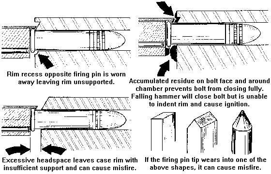

.22 Misfire Causes | .22 Ammunition Selection | Reloading Components
The Causes and Solutions for .22 Misfires
(By the Technical Staff Omark CCI)
With new and properly stored ammunition, the chances that you will experience a legitimate misfire are seldom. But still, misfires do occur, and with the exception of defective primers (as is all too common with Remington ammunition), it is usually a gun problem. There are many more components in the gun than in the ammunition that can cause difficulty. Firing pin wear is a prime offender. At any rate, carefully examine the weapon for the following conditions before condemning the ammunition.

The task of selecting ammo for your .22 pistol is an important one. Regardless of the pistol, the following factors must be considered in the selection process:
Accuracy (and consistency from lot to lot)
Functioning (some types malfunction in certain guns)
Cost (the biggest variable)
If a certain ammo does not function well in your
pistol, change to another. It is the only of the three factors of
which you have no control. Beyond that, selection is really a
matter of how much accuracy you can afford. However, even some of
the most inexpensive cartridges still produce satisfactory
groups. To read an extensive article about the process of
conducting your own ammunition accuracy test, select the
following link:
Testing Ammunition Accuracy
Component
Manufacturers
In addition to product listings, you will find an enormous
quantity of information on reloading at the following places:
The maker of the finest progressive presses for the money! |
|
Star makes the most accurate swaged lead bullet money can buy. |
|
Manufacurer of popular and accurate jacketed bullets. |
|
Manufacturer of bullets and other components for reloading. |
|
The Sedalia, Mo. company makes fine handgun brass. |
|
Winchester reloading components and reloading guide. |
|
Another well-known U.S. bulletmaker. |
|
Alliant (formerly Hercules) manufactures the finest gun powders. |
|
Finland's superb manufacturer of gun powders. |
|
The Shawnee Mission, Kansas manufacturer of gun powders. |
|
IMR manufactures a full line of gun powders. |
|
Lyman reloading components and equipment. |